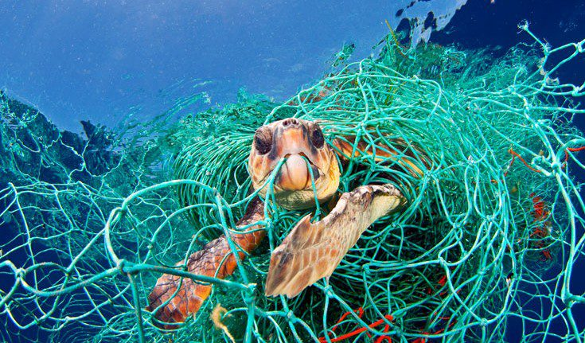

Threats to Turtles
Turtles are incredible creatures that have been around for millions of years. However, their survival is under constant threat due to various human-induced factors. It is crucial to understand and address these threats to ensure the continued existence and conservation of turtle populations worldwide. In this article, we will explore three main threats to the turtle population, along with their consequences and preventive measures.

Habitat Destruction
Habitat destruction represents a significant threat to turtle populations around the world. Coastal development, pollution, and climate change contribute to the degradation and loss of crucial nesting beaches and foraging grounds. Human activities, such as urbanization and industrialization, result in the destruction and alteration of coastal ecosystems where turtles rely on for survival.
The destruction of vital habitats disrupts the nesting and feeding patterns of turtles, leading to a decline in their population. Displaced turtles may struggle to find suitable alternatives, leading to increased vulnerability to predators and diminished reproductive success. The loss of nesting sites impacts the survival rates of eggs and hatchlings, further contributing to population decline.
upport efforts to address climate change and promote environmental conservationcoastal conservation efforts: Encouraging the establishment and protection of marine protected areas (MPAs) helps safeguard critical nesting beaches and foraging habitats. Sustainable coastal development: Implementing responsible development practices that consider the conservation of turtle habitats, such as maintaining buffer zones and minimizing pollution from construction projects. Public awareness and education: Educating communities and raising awareness about the importance of preserving turtle habitats can promote responsible behavior and foster a sense of stewardship among coastal dwellers.
Pollution
Pollution poses a significant threat to turtle populations worldwide. Plastic debris, oil spills, chemical pollutants, and marine litter contaminate the oceans, impacting turtles at various stages of their life cycle. Ingestion of plastics and entanglement in discarded fishing gear can lead to injury, suffocation, or death.
Pollution has detrimental effects on turtles' health and well-being. Ingesting plastic debris can obstruct their digestive system, leading to malnutrition, internal injuries, and even death. Entanglement in fishing gear can cause injuries, amputations, or drownings. Additionally, chemical pollutants accumulate in turtles' tissues, compromising their immune system and reproductive health.
Reduce plastic consumption: Promote the use of reusable bags, bottles, and other alternatives to single-use plastics to minimize plastic waste entering the oceans. Proper waste management: Implement and enforce effective waste management practices, including recycling programs and waste reduction initiatives, to prevent pollution from reaching marine environments. Support legislation and regulations: Advocate for stricter regulations on the use and disposal of hazardous chemicals and fishing gear to reduce the impact on turtles and other marine species.

Illegal Wildlife Trade
Illegal wildlife trade, driven by demand for turtle products, is a grave threat to turtle populations worldwide. Turtles are sought after for their meat, eggs, shells, and as pets. Poaching and trafficking of turtles disrupt natural populations and exploit their vulnerability for profit.
The illegal wildlife trade poses significant conservation risks for turtle species. Overexploitation can decimate turtle populations, destabilizing ecosystems and disrupting the delicate balance of marine biodiversity. The loss of turtles as apex predators can lead to ecological imbalances, affecting the health of coral reefs and seagrass beds.
Strengthen law enforcement: Enhance anti-poaching efforts and increase penalties for illegal trade to deter and disrupt illegal wildlife networks. Promote sustainable alternatives: Raise awareness about the ecological importance of turtles and the availability of sustainable alternatives to turtle products, such as synthetic materials or vegetarian options. Engage local communities: Empower local communities by providing alternative livelihood opportunities, such as eco-tourism initiatives, that promote conservation rather than exploitation.
